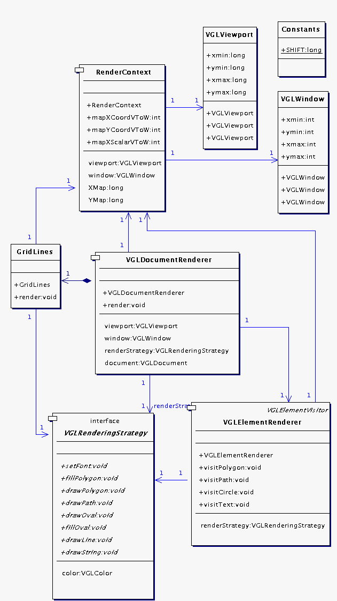
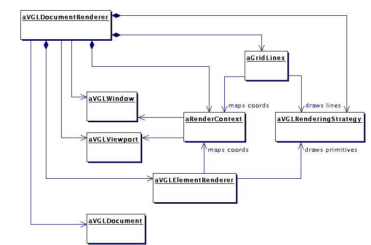

VGLViewer

Implementation
vglRenderer |
Overview|
Package vglRenderer implements a renderer of VGLDocuments which can be used with any windowing toolkit. The renderer can also draw grid lines behind document features to give an idea of scale.
|
|
Before use, a VGLDocumentRenderer is configured with
|
- a VGLDocument to render,
- a VGLViewport to specify the region of the VGLDocument to render,
- a VGLWindow to specify the region on the graphics device in which to draw corresponding output primitives such as line segments and polygons, and
- an implementation of VGLRenderingStrategy with which to draw the primitives to the graphics device.
|
|
When render() is subsequently called on the VGLDocumentRenderer, the VGLDocument will be rendered to the device, against a background of grid lines.
|
Implementation|
Classes implementing the VGL renderer are shown in the class diagram below.
|

Figure 10. vglRenderer classes
|
VGLDocumentRenderer has a VGLElementRenderer, with which it visits and renders each VGLElement in the VGLDocument, and a VGLGridLines, with which it renders the grid lines. Both of these classes need the VGLViewport and VGLWindow that the VGLDocumentRenderer was configured with, and these are supplied to them via a RenderContext, which also provides convenient methods for these classes to map coordinates from window to viewport-space.
|
|
Incidentally, I originally implemented GridLines and VGLElementRenderer as inner classes of VGLDocumentRenderer. This allowed them direct access to the VGLViewport and VGLWindow held by the VGLDocumentRenderer, but caused them to be hidden in the UML class diagram. It also allowed surrupticous coupling, a risky thing. I factored them out as seperate classes so that they would appear in the diagram and could be discussed. To allow this, I created RenderContext so they could each access the VGLViewport and VGLWindow.
|
|
Two more classes remain to be described: VGLRenderingStrategy and Constants.
|
| VGLRenderingStrategy, as the name implies, is a Strategy which is to implemented by users of VGLDocumentRenderer to do the low-level drawing of primitives such as lines and polygons. It's contract requires that it be a state machine that renders elements with the last colour or font that it was given. To use VGLDocumentRenderer with the AWT, for example, a user would supply an Adapter object which adapts a java.awt.Graphics context object to VGLRenderContext interface. This technique makes the package portable across many window managers, and allows it's architecture to be implemented in C++ on top of OpenGL, for example.
|
|
Constants simply holds a constant by which the long integer coordinates of VGLElement subclasses are scaled up by before arithmetic, then scaled down by afterward. This is a standard trick to approximate floating-point arithmatic using integers, as explained in more detail below.
|
|
The following instance diagram shows another view of how instances of these classes plug together to form the document renderer.
|

Figure 11. Objects implementing the VGL document renderer
Optimization #1: Integer Arithmetic|
VGLDocumentRenderer avoids the overhead of floating-point arithmetic by doing most calculations using integers. Recall that VGLDocument element geometries are stored as long integers. Floating-point precision is approximated by shifting integer values left before calculations by multiplying them by the amount defined in property SHIFT in class Constants, then shifting the results right afterwards by dividing by the same amount . The following code snippets from RenderContext shows how in one part of the class the viewport-to-window scalling factors are computed and then used in another part to transform X coordinates from viewport-space to window-space. The factors are stored in left-shifted form, so window coordinates needed to be right-shifted after being multipled by them.
|
...
double x = ((double)window.xmax - (double)window.xmin) / (viewport.xmax - viewport.xmin);
double y = ((double)window.ymax - (double)window.ymin) / (viewport.ymax - viewport.ymin);
xMap = (long)(x * Constants.SHIFT);
yMap = (long)(y * Constants.SHIFT);
...
public int mapXVToW(long x)
{
return (int)((window.xmin + (int)((x - viewport.xmin) * xMap)) / Constants.SHIFT);
}
...
|
Optimization #2: Minimising the Impact of Garbage Collection on Frame Rate|
VGLDocumentRenderer uses temporary storage for window-space coordinates that have been transformed from viewport-space, and these coordinates are no longer needed after they have been rendered. We don't want the JVM garbage collector to kick in and clean them up after each path or polygon primitive has been rendered, so, as shown in the following code snippets, they are kept in two static arrays, ix and iy, which are expanded as required.
|
...
ensureTempPointCapacity(sx.length);
for (int i = 0; i < sx.length; i++) {
ix[i] = renderContext.mapXVToW(sx[i]);
iy[i] = renderContext.mapYVToW(sy[i]);
}
drawPath(ix, iy, sx.length);
...
private void ensureTempPointCapacity(int nRequired) {
if (nRequired > ix.length) {
ix = new int[nRequired];
iy = new int[nRequired];
}
}
private static int[] ix = new int[200];
private static int[] iy = new int[200];
...
|
|